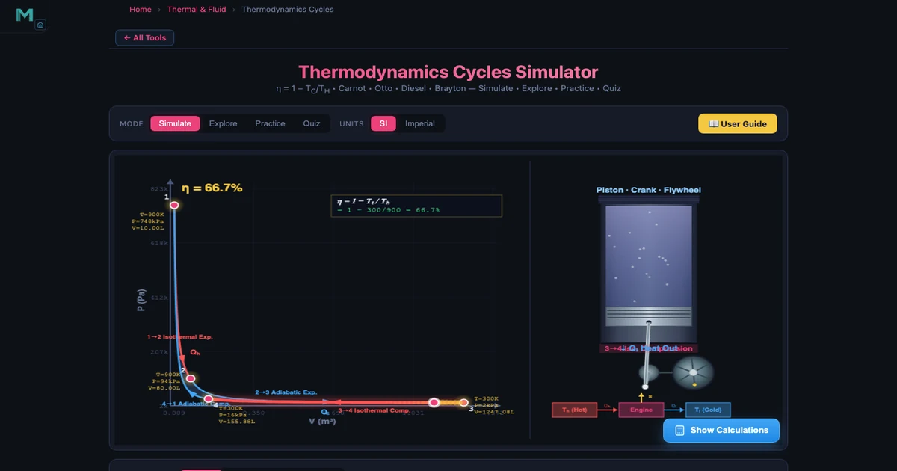
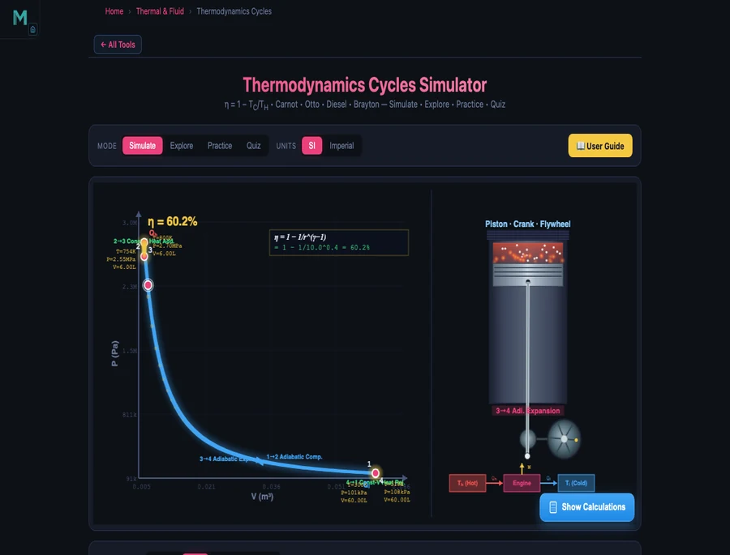
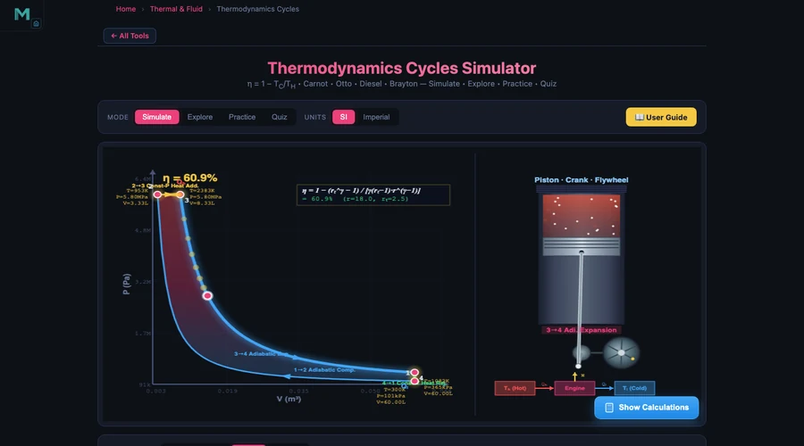
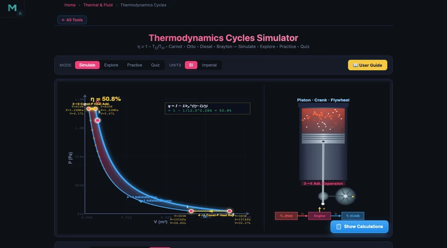
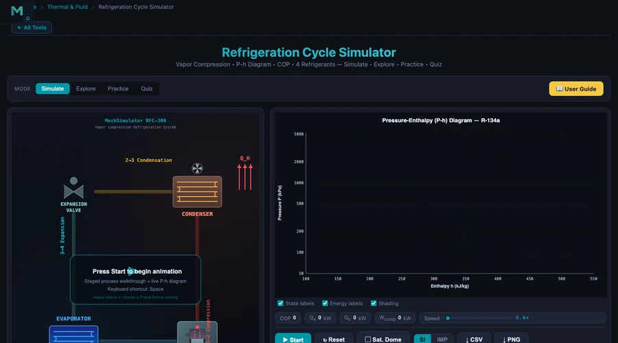

How I Teach Four Thermodynamic Cycles Using One Simulator — And Why Students Finally Get It

- Carnot sets the ceiling: η = 1 − T_C/T_H (kelvin), depending only on reservoir temperatures — e.g. T_H = 900 K, T_C = 300 K gives 66.67%, which no real engine between those temperatures can exceed.
- Engine cycles differ by how heat is added: Otto (η = 1 − 1/r^(γ−1)) adds heat at constant volume, Diesel at constant pressure with a cutoff-ratio penalty, and Brayton (η = 1 − 1/r_p^((γ−1)/γ)) at constant pressure for gas turbines.
- Reversed cycles use Coefficient of Performance instead of efficiency: COP = T_C/(T_H − T_C) can exceed 1 because work moves existing heat — a Carnot fridge at 250 K/310 K reaches COP = 4.17.
Here is a scene that plays out every semester without fail. A student stands at the board, writes the Carnot efficiency formula perfectly, substitutes the numbers correctly, and gets the right answer. Then I ask: "What would happen to efficiency if you increased the cold reservoir temperature by 50 degrees?" Silence. They can manipulate the formula but they don't own the concept. That gap — between substituting numbers and actually understanding what the formula is telling you — is exactly what this simulator closes.
The NHIT VisualLab Thermodynamics tool covers all four major thermodynamic cycles — Carnot, Otto, Diesel, and Brayton — plus heat engine analysis, refrigerator COP, entropy, and the compression ratio calculation, all in one browser-based interface. No installation. No textbook appendix hunting. And unlike static diagrams, the PV and TS plots animate as you drag the sliders, so students see the cycle shape change in real time as they adjust parameters.
Why Thermodynamic Cycles Are Hard to Teach From Textbooks Alone
The standard thermodynamics course spends weeks on four cycles that look deceptively similar on paper. They all have four processes. They all have an efficiency formula. And they all reduce to the same kind of substitution exercise in the end-of-chapter problems. So students treat them as four different equations to memorise rather than four variations of the same physical argument — and that is where the confusion starts.
The moment a student sees the Otto cycle's PV diagram animate alongside the Diesel cycle's PV diagram, the differences snap into focus. The isochoric heat addition of the Otto cycle (vertical line on the PV plot, heat dumped instantly at constant volume) versus the isobaric heat addition of the Diesel cycle (horizontal line, slower fuel injection at constant pressure) — these look nothing alike on a moving diagram. The textbook figure doesn't give you that.
There's another problem: efficiency numbers feel abstract until students can manipulate them themselves. Telling a class that a compression ratio of 10 gives 60.19% Otto cycle efficiency means nothing until they can drag the slider from 8 to 12 and watch the efficiency climb from 56.47% to 63.04% in front of them. Then the question "why do petrol engines stay below r = 12?" becomes genuinely interesting rather than a memorisation task.
Cycle 1 — The Carnot Cycle: The Ceiling No Engine Reaches
The Carnot cycle is the most important and the most misunderstood cycle in the curriculum. Students often think of it as just another engine to calculate. It isn't. It's a proof — a thermodynamic argument that sets the upper limit on what any engine operating between two temperatures can achieve.
\[\eta_{\text{Carnot}} = 1 - \dfrac{T_C}{T_H}\]
That formula says something specific: efficiency depends only on temperature. Not on the working fluid. Not on the number of stages. Not on whether the engine is a piston or a turbine. Just the ratio of cold to hot, in kelvin. Set \(T_H = 900\) K and \(T_C = 300\) K and you get \(\eta = 1 - 300/900 = 66.67\%\). No real engine between these reservoirs can do better. Period.
In the simulator, the Carnot cycle runs through four reversible processes: isothermal expansion at \(T_H\) (the working gas absorbs heat while expanding at constant temperature), adiabatic expansion (the gas cools from \(T_H\) to \(T_C\) as it expands further with no heat exchange), isothermal compression at \(T_C\) (heat is rejected), and adiabatic compression back to the start. The animated PV diagram traces all four segments simultaneously. What I find most useful pedagogically is the instant feedback when students move the cold reservoir slider: push \(T_C\) from 300 K up to 500 K and the efficiency drops from 66.67% to 44.44% — immediately visible, immediately felt.
The key teaching point the simulator drives home: reducing \(T_C\) (colder cold reservoir) improves efficiency faster than raising \(T_H\) by the same amount, because we're subtracting a fraction from 1. That is a counterintuitive result that most students only grasp when they can play with the numbers themselves.
Cycle 2 — The Otto Cycle: Your Car Engine, Idealised
The Otto cycle is the ideal model for spark-ignition petrol engines. Four processes: adiabatic compression (1→2), isochoric heat addition — combustion — at top dead centre (2→3), adiabatic expansion — the power stroke (3→4), and isochoric heat rejection — exhaust (4→1). The efficiency depends on just two parameters:
\[\eta_{\text{Otto}} = 1 - \dfrac{1}{r^{\,\gamma - 1}}\]
where \(r\) is the compression ratio \(V_{\max}/V_{\min}\) and \(\gamma = c_p/c_v\) is the heat capacity ratio (1.4 for air). Set \(r = 10\) and you get \(\eta = 1 - 1/10^{0.4} = 1 - 1/2.512 = 60.19\%\). That is the efficiency ceiling for an ideal Otto cycle — a real petrol engine achieves maybe 35–40% because of friction, incomplete combustion, heat losses, and pumping losses.

The Otto cycle diagram in the simulator shows something the textbook diagram never makes obvious: the enclosed PV area is the net work. A larger compression ratio stretches the diagram vertically (higher peak pressure at 2) and horizontally (larger expansion volume at 4), so the enclosed area grows — more net work for the same heat input. That is why engineers want higher compression ratios. And the reason they don't push r above 12 in petrol engines? Engine knock. At high compression, the air-fuel mixture auto-ignites before the spark fires, sending a destructive pressure wave through the cylinder. Diesel engines sidestep this by compressing only air — no fuel present until injection.
Cycles 3 and 4 — Diesel and Brayton: Trucks and Gas Turbines
Switch to the Diesel tab and the PV diagram changes shape immediately. The vertical 2→3 line of the Otto cycle flattens into a horizontal constant-pressure segment — fuel is injected gradually into the compressed hot air, burning over a longer stroke rather than all at once. The Diesel efficiency formula carries an extra penalty term for this extended combustion:
\[\eta_{\text{Diesel}} = 1 - \dfrac{1}{r^{\,\gamma-1}} \cdot \dfrac{r_c^{\,\gamma} - 1}{\gamma\,(r_c - 1)}\]
where \(r_c\) is the cutoff ratio — the ratio of the volume at the end of heat addition to the volume at the start. For \(r = 18\), \(r_c = 2.5\), \(\gamma = 1.4\), the Diesel efficiency is 65.79%. Higher than Otto for the same γ, but that's because Diesel engines use compression ratios of 14–22 that would destroy a petrol engine.

The Brayton cycle replaces pistons with a compressor–combustor–turbine arrangement. Compression and expansion are still adiabatic, but heat addition and rejection happen at constant pressure (open flow), not constant volume. The efficiency depends on the pressure ratio \(r_p\):
\[\eta_{\text{Brayton}} = 1 - \dfrac{1}{r_p^{\,(\gamma-1)/\gamma}}\]
At \(r_p = 12\), \(\gamma = 1.4\): \(\eta = 1 - 1/12^{0.2857} = 1 - 1/2.033 = 50.81\%\). That number might seem disappointing compared to Diesel, but Brayton cycle machines run continuously at very high mass flow rates — a large gas turbine can produce hundreds of megawatts from a compact footprint. Modern turbofan jet engines push \(r_p\) to 40–50.

Reversing the Cycle: Refrigerators, Heat Pumps, and COP
Every thermodynamic cycle can be run in reverse. Instead of using heat to produce work, you use work to pump heat from cold to hot. That is a refrigerator. And the performance metric changes from efficiency (always less than 1) to Coefficient of Performance (COP), which can exceed 1 because you're moving existing heat rather than converting it.
\[\text{COP}_{\text{ref}} = \dfrac{Q_C}{W} = \dfrac{T_C}{T_H - T_C}\]
For a Carnot refrigerator between \(T_C = 250\) K and \(T_H = 310\) K: \(\text{COP} = 250/(310 - 250) = 250/60 = 4.17\). That means 4.17 joules of heat are extracted from the cold space for every 1 joule of work you supply. Your household refrigerator achieves a COP of 2–4 depending on the temperature difference and refrigerant.
The thermodynamics simulator covers COP calculations in its Applications section, but for the full vapour-compression refrigeration cycle — complete with a P-h diagram, four real refrigerants (R-134a, R-410A, R-32, R-290), and animated cycle states — the dedicated Refrigeration Cycle Simulator is the tool to use alongside it.

How I Build a Full Thermodynamics Unit Around These Tools
After five years of teaching thermodynamics, I've settled on a four-phase unit structure that uses the simulators as the backbone rather than the supplement.
Week 1 — Laws first, cycles second. Start with the First and Second Laws using the simulator's Explore mode. Students click through the concept cards for ΔU = Q − W, entropy ΔS = Q/T, and the Carnot statement of the Second Law before they see a single PV diagram. The worked example for each concept — the tool walks through four steps for every calculation — acts as a self-paced scaffolding. A student who works through "a gas absorbs 500 J and does 200 J of work, ΔU = 300 J" before class arrives better prepared than one who read the textbook chapter cold.
Week 2 — Carnot as the reference. Set the Carnot simulator to T_H = 800 K, T_C = 300 K (η = 62.5%) and ask students: "What single change improves efficiency the most — raising T_H by 100 K, or lowering T_C by 100 K?" They guess, then check. Lowering T_C to 200 K gives η = 75%; raising T_H to 900 K gives η = 66.67%. The cold side always matters more at moderate temperatures. That insight sticks precisely because they discovered it rather than being told it.
Week 3 — Real cycle comparisons. Run Otto, Diesel, and Brayton side by side at equivalent parameters. Otto at r = 10: 60.19%. Diesel at r = 18, rc = 2: 64.0%. Brayton at rp = 12: 50.81%. Ask which is "best" and the conversation immediately gets richer — you need to factor in mass flow rate, fuel cost, power-to-weight ratio, and operating temperature range before the question has an answer.
Week 4 — Practice mode assessment. The simulator generates random thermodynamics problems with step-by-step solutions shown on demand. I give a timed in-class session where students work five problems each, check their own answers, and bring their error types to the debrief. The quiz mode (five randomised questions from the full pool of 15 question types) works well as a warm-up closer. Cross-link to the heat exchanger LMTD article for the follow-on lesson on how heat is actually transferred between reservoirs in practice.
Connecting the Thermal Simulator Ecosystem
Thermodynamics doesn't exist in isolation. The cycles we teach describe engines, refrigerators, power plants, and HVAC systems — all of which involve heat transfer, fluid properties, and phase changes that have their own simulators. Here's how the tools connect:
The Ideal Gas Law Simulator (\(PV = nRT\)) underpins every process in the Carnot and Otto cycles — the adiabatic compression is a gas law problem at its core. When students struggle with "why does the gas temperature rise during adiabatic compression even though no heat is added?", the ideal gas simulator makes the PV relationship concrete before they return to the thermodynamics tool.
The Specific Heat Capacity Simulator (\(Q = mc\Delta T\)) bridges to heat addition calculations. In the Otto cycle, the heat added at constant volume is \(Q_{in} = m c_v (T_3 - T_2)\). Students who have already worked with the specific heat simulator have a much easier time applying this formula because they already know what \(c_v\) physically means.
The Phase Change Simulator becomes important the moment you discuss refrigeration — the whole vapour-compression cycle depends on the refrigerant alternating between liquid and vapour states at different pressures. And for understanding how heat moves between the hot and cold reservoirs that all these cycles assume, the Heat Transfer Simulator (conduction, convection, radiation) and the Heat Exchanger Simulator fill in the gaps the idealised cycle analysis leaves open.
Try It Yourself
All tools below are free — no account, no download, no install.
Key Takeaways
- Carnot efficiency \(\eta = 1 - T_C/T_H\) depends only on reservoir temperatures in kelvin — it is the absolute upper limit for any engine between those two temperatures, regardless of working fluid or design.
- Otto cycle efficiency \(\eta = 1 - 1/r^{\gamma-1}\) increases with compression ratio: r = 8 gives 56.47%, r = 10 gives 60.19%, r = 12 gives 63.04%. Engine knock in petrol engines limits r to around 8–12.
- The Diesel cycle adds heat at constant pressure (not constant volume like Otto), which allows higher compression ratios (14–22) and correspondingly higher ideal efficiencies — at r = 18 and r_c = 2.5, Diesel efficiency is 65.79%.
- The Brayton cycle is the gas turbine model: constant-pressure heat addition and rejection, with efficiency \(\eta = 1 - 1/r_p^{(\gamma-1)/\gamma}\). At rp = 12, η = 50.81%; modern jet engines push rp to 40–50.
- Reversed cycles (refrigerators, heat pumps) use COP rather than efficiency. COP can exceed 1 because you are moving heat, not converting it. A Carnot refrigerator at T_C = 250 K, T_H = 310 K achieves COP = 4.17.
- Connecting multiple simulators — thermodynamics, refrigeration cycle, heat exchanger, ideal gas law, specific heat, phase change — lets students trace the full energy story from a textbook cycle all the way to real engineering equipment.
Frequently Asked Questions
What is the Carnot efficiency formula and what does it depend on?
The Carnot efficiency is η = 1 − T_C / T_H, where T_C is the cold reservoir temperature and T_H is the hot reservoir temperature, both in Kelvin. It depends only on the two temperatures — not on the working fluid, the engine design, or the size of the machine. For T_H = 900 K and T_C = 300 K, the Carnot efficiency is 66.67%. No real engine can exceed this value when operating between the same two temperatures.
How does compression ratio affect Otto cycle efficiency?
Otto cycle efficiency is η = 1 − 1/r^(γ−1), where r is the compression ratio and γ is the heat capacity ratio (1.4 for air). A compression ratio of 8 gives η = 56.47%; increasing it to 10 raises efficiency to 60.19%. Each unit increase in compression ratio improves efficiency, but diminishing returns set in above r = 12, and engine knock limits typical petrol engines to r = 8–12.
What is the difference between the Otto and Diesel cycles?
Both use adiabatic compression and expansion, but they differ in how heat is added. The Otto cycle adds heat at constant volume (isochoric) — this models spark-ignition petrol engines where combustion is nearly instantaneous. The Diesel cycle adds heat at constant pressure (isobaric) — fuel is injected gradually into already-compressed hot air. Diesel engines use higher compression ratios (14–22 vs 8–12) because there is no fuel present during compression, so engine knock is not a limiting factor.
What is the Brayton cycle and where is it used?
The Brayton cycle models gas turbines and jet engines. It consists of adiabatic compression, constant-pressure heat addition (combustion), adiabatic expansion through a turbine, and constant-pressure heat rejection. Its efficiency is η = 1 − 1/rp^((γ−1)/γ), where rp is the pressure ratio. For rp = 12 and γ = 1.4, efficiency is 50.81%. Modern jet engines achieve pressure ratios of 30–50, giving theoretical efficiencies above 65%.
What is COP and how is it different from thermal efficiency?
Thermal efficiency (η) applies to heat engines and measures what fraction of heat input becomes useful work — it is always less than 1 (or 100%). Coefficient of Performance (COP) applies to refrigerators and heat pumps that use work to move heat. COP can be greater than 1 because you are moving existing heat, not creating it. A Carnot refrigerator between T_C = 250 K and T_H = 310 K has COP = T_C / (T_H − T_C) = 250 / 60 = 4.17, meaning 4.17 J of heat is moved for every 1 J of work input.
Thermodynamic cycles are some of the most elegant ideas in engineering — they describe how engines, refrigerators, turbines, and power plants extract useful work from temperature differences. But that elegance only becomes visible when you can move the parameters and watch the consequences unfold in real time. A static textbook diagram can't do that.
Open the Thermodynamics Simulator, pick the Carnot cycle, and ask yourself: what is the maximum efficiency possible for a steam power plant operating between 600 K and 300 K? Type in the numbers. Then ask what happens if you can improve the boiler to 700 K. That kind of active exploration — where you own the numbers rather than copying them from a textbook answer key — is what turns thermodynamic cycles from a formula list into actual engineering intuition.